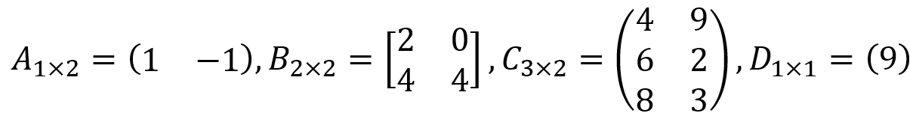

DEFINISI MATRIKS
🗣️: Eh, apaan tuh ada angka kecil di deket elemen?
Oke, angka kecil yang teman-teman lihat itu menyatakan letak baris dan kolom elemennya. Kalau teman-teman punya matriks A, letak elemennya biasanya ditulis dengan aij. Huruf i atau angka pertama menyatakan letak baris ke berapakah elemen tersebut, dan huruf j atau angka kedua menyatakan letak kolom elemennya. Jadi, kalau a11 menyatakan bahwa elemen tersebut terletak di baris ke-1 yang kolom ke-1, a12 menyatakan bahwa elemennya terletak di baris ke-1 dan kolom ke-2, a21 menyatakan elemennya terletak di baris ke-2 dan kolom ke-1, dan seterusnya.
Oh iya, matriks juga punya ukurannya sendiri yang namanya ordo. Ordo menyatakan banyaknya baris dan kolom dalam suatu matriks yang ditulis dalam bentuk baris kali kolom. Teman-teman bisa lihat contoh berikut ini ya!
